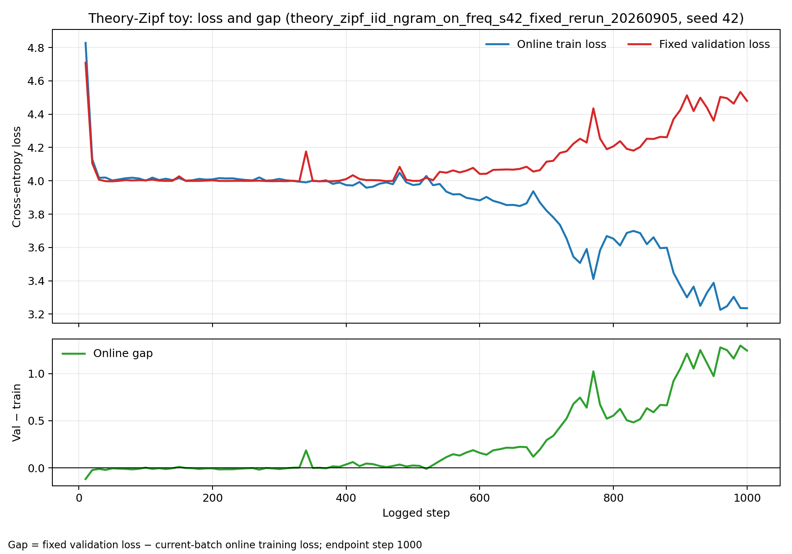
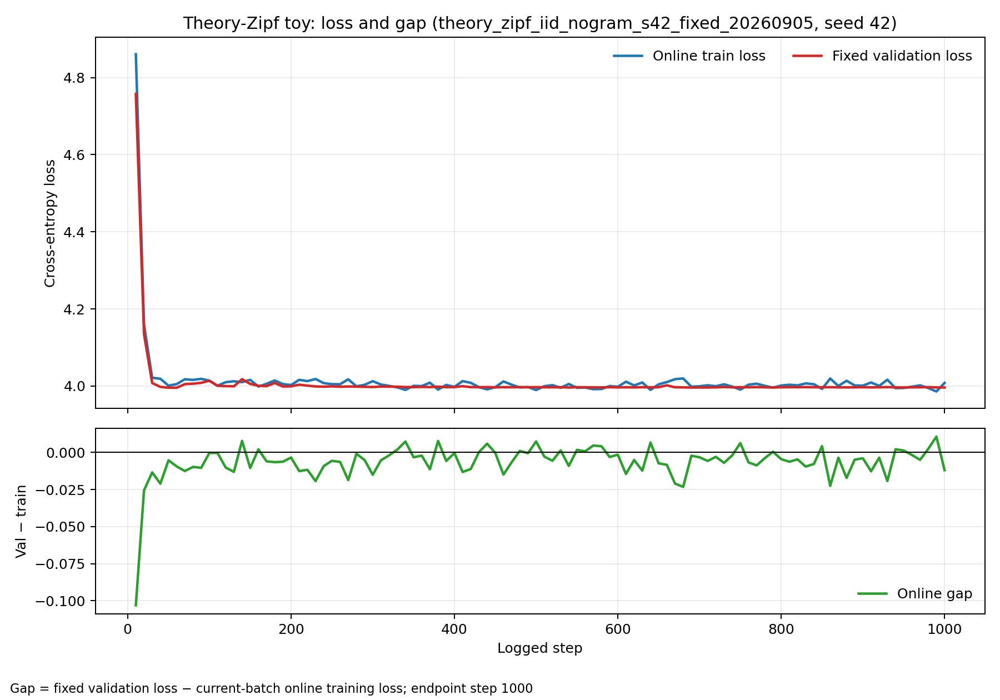
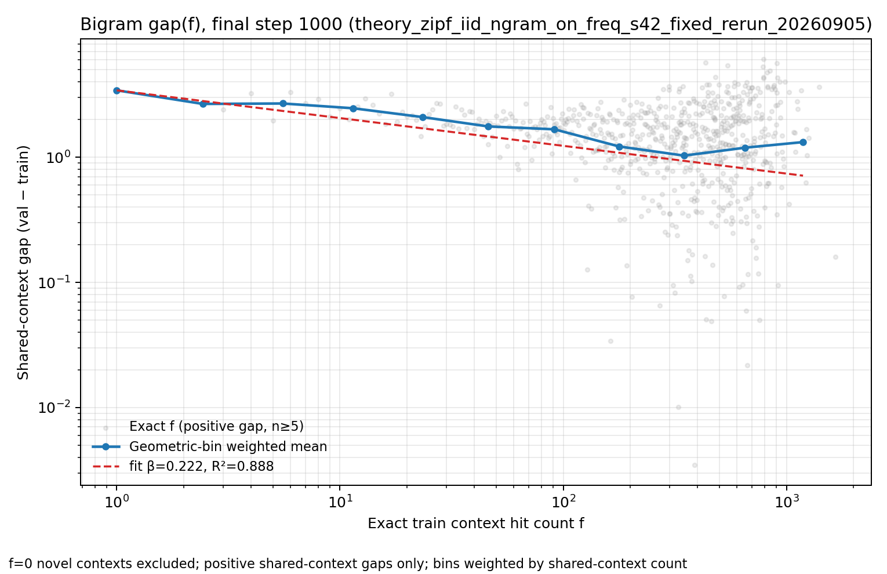
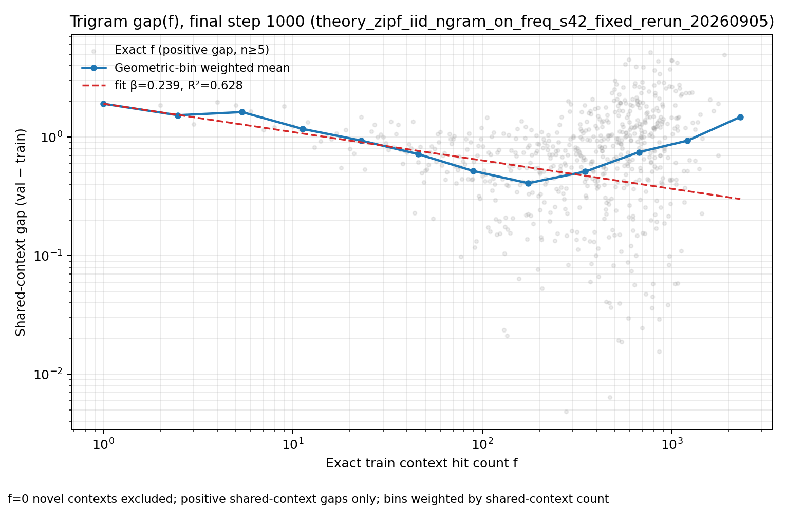
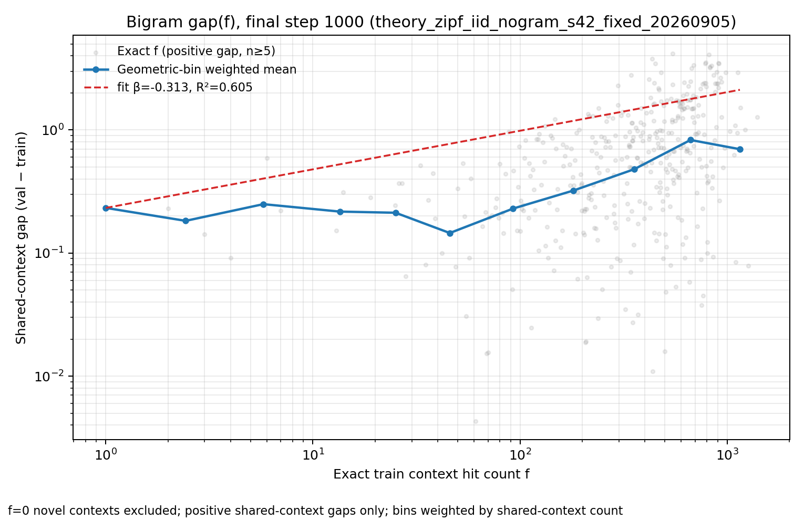
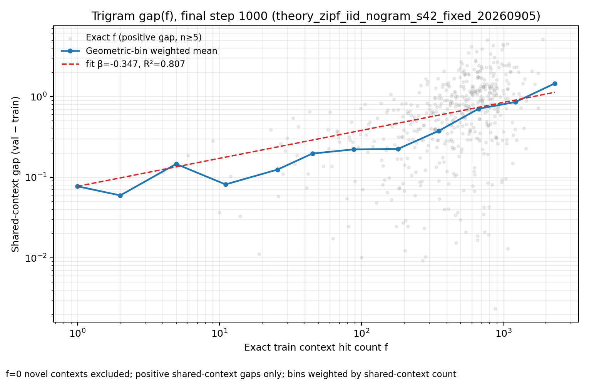
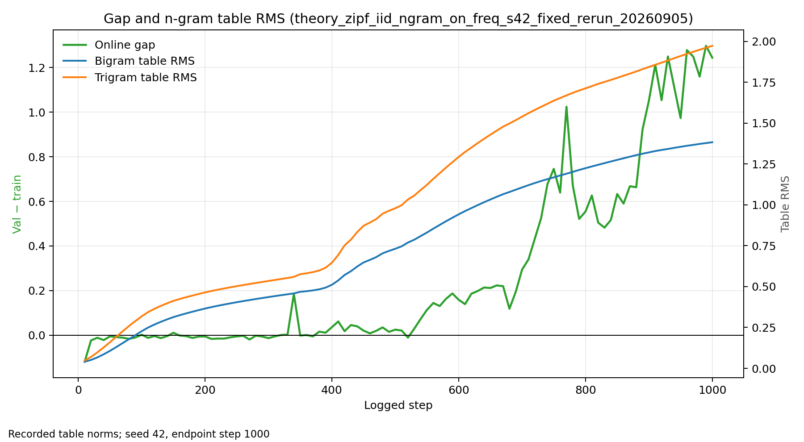
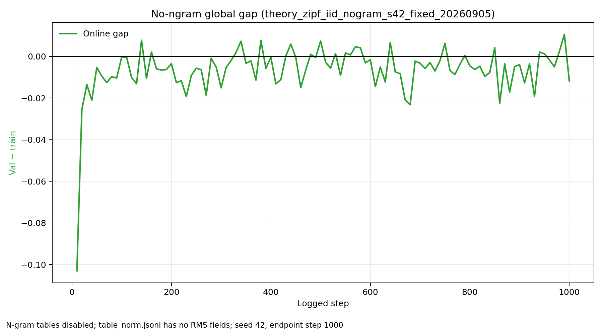

Theory-Zipf toy：ngram-on 与 no-ngram 对照实验报告
固定数据、固定模型和固定训练协议下的单 seed（42）、1000-step 对照；生成日期 2026-09-05。
1. 数据集如何生成
这组实验的数据由 toy_theory_zipf_20260903.py 生成。它不是文本语料，也不是人工拼接的 bigram/trigram；生成器只产生一个平坦的 token ID 流。每个 token 独立抽样：
这里的 rank $r=1,\ldots,8192$ 对应 token ID $r-1$。生成器先把这 8192 个权重归一化为 CDF，再用独立均匀随机数和 numpy.searchsorted 做 inverse-CDF 抽样；每次最多处理 1,000,000 个 token，最后以 little-endian uint16 二进制写出。train 使用 seed 42，validation 使用从 1,000,045 开始的独立 seed 序列。同一 token ID 可以自然地出现在 train 和 validation 中，但两套抽样彼此独立。因为每个位置独立，真实数据分布满足 $P(y\mid c)=P(y)$：数据本身没有“看到某两个词就必须接某个词”的规则。
文件中保存的是 little-endian uint16 token ID；n_embd=768 是模型内部 embedding 宽度，不是数据文件中每个 token 的字节数。
生成到 shard_00001.bin，对应 337 个 device batches 的主线训练几何。
生成到 shards 2–10 和 6542；与 train 文件不重叠。完整 validation pool/train raw-token 比为 9.8427299703:1。
每个 loader 样本需要 sequence_len+1=2049 个连续 token，前 2048 个作为 input，后移一位作为 target。生成器不写入 context 标签、转移矩阵、块结构、SEP、padding 或 context-specific continuation map；bigram/trigram 只在训练时由模型按滑动窗口从普通 token 流中读取。也就是说，ngram 结构是模型的读取方式，不是数据生成器偷偷植入的数据结构。
训练程序随后从这个流中构造 context：bigram 分支把相邻的两个 token 作为一个 context key，trigram 分支把相邻的三个 token 作为一个 context key；对每个 key 统计它在 train shard 1 中出现的次数 $f$。这些 key 和计数由 freq_index.npz 记录，但它们是生成之后的诊断索引，不是写入 .bin 数据的额外字段。
生成器还保存 marginal_oracle.npz：其中包括 token probabilities、熵 3.9979072594 nats、$P_0(f)=\sum_y p(y)(1-p(y))^f$ 的 missing-mass 曲线，以及渐近指数 $1-1/\alpha=0.25$。这些 oracle 是数据分布的理论参照，不是从模型 loss 拟合出来的参数。
1.1 数据文件、索引和图像的关系
| 层级 | 文件 / 对象 | 产生方式 | 报告中用途 |
|---|---|---|---|
| 原始数据 | shard_00001.bin、shard_00002.bin–shard_00010.bin、shard_06542.bin | 生成器按 finite-Zipf CDF 独立抽样，顺序写入 uint16 token ID | 训练和固定 validation 的唯一 token 来源 |
| 分布 oracle | marginal_oracle.npz | 由已知 Zipf 概率直接计算 $P_0(f)$、singleton mass 和 entropy | 检查数据边际理论，不参与模型训练 |
| context index | freq_index.npz | 读取 train shard 1 的普通 token 流后，滑窗统计 bigram/trigram key 的 exact hit count | 把诊断 loss 按 $f$ 分组；不改变模型输入 |
| 训练统计 | train_log.jsonl | train.py 每 10 step 写入 online train、fixed val 和 gap | 图 1–2 的三条曲线 |
| 频率统计 | exact_freq_loss.jsonl | 诊断 forward 保留 per-token loss，再按 exact $f$ 聚合 train/val mean | 图 3–6 的灰散点与分桶点 |
| 表诊断 | table_norm.jsonl | 每 10 step 记录 ngram table 行向量 RMS；no-ngram 没有 RMS 字段 | 图 7 的蓝/橙线；图 8 只画 gap |
2. 实验问题与可比性
问题是：在同一份 iid finite-Zipf 数据上，模型开启 bigram/trigram value tables 后，是否会产生训练集特有的记忆和 frequency-dependent gap；关闭 ngram 后，这些现象是否消失或显著减弱。
| 坐标 | 两组共同设置 | 差异 |
|---|---|---|
| 数据 | 同一数据目录 theory_zipf_iid_mainline_aligned_20260904；train shard 1；validation shards 2–10、6542；fixed replay；相同 frequency index | 无 |
| 模型 | vanilla nanoGPT，8 layers / 6 heads / 768 dim，vocab 8192，sequence length 2048，input/wte 注入位置 | ngram-on 建立 bigram 与 trigram 表；no-ngram 不建立表 |
| 优化 | AdamW backbone LR 0.0006；RMSProp table β=(0,0.99)、table LR scale 128；warmup-constant 100 steps；bf16；seed 42；1000 steps | no-ngram 没有 table 参数更新 |
| 测量 | 每 10 step 记录；固定 validation 4 batches；global gap = fixed validation loss − 当前 batch online train loss | 频率诊断也每 10 step记录 |
3. 两组实验结果
theory_zipf_iid_ngram_on_freq_s42_fixed_rerun_20260905
train loss 3.2353；validation loss 4.4798；参数量 1,675,181,568。
theory_zipf_iid_nogram_s42_fixed_20260905
train loss 4.0080；validation loss 3.9961；参数量 64,568,832。
因此 ngram-on 相对 no-ngram 的 endpoint gap 增量约为 1.2565 nats/token。同时，ngram-on 的训练 loss 明显低于 no-ngram，而 validation loss 反而高约 0.484 nats/token；这符合“表记忆帮助复用训练样本、却不能同等帮助独立 validation”的实验模式。


图 1–2 的共同测量含义：validation 使用启动时捕获并反复复用的固定 4 batches，所以红线较平滑；train 是每步当前 batch 的 online loss，所以蓝线和差值绿线更容易起伏。每个 device batch 是 $72\times2048=147{,}456$ 个 loss tokens。
4. 频率现象：每个散点和线如何产生
两组都使用同一 frequency index，因此频率分桶本身由数据决定，而不是由模型开关决定。频率诊断在 final step 对 exact train hit count f 的 shared contexts 计算：
只对 train 和 validation 都有 token 的 shared contexts 定义；
f=0 novel contexts 没有 train-side counterpart，不进入标准 gap 曲线。频率图不是把文件中的某个“context 频率列”直接画出来。训练程序从原始 token 流构造 bigram context 或 trigram context，统计 train shard 1 中每个 context 的 exact hit count $f$；然后在 final step=1000 的诊断 batch 中，把 train 和 validation 都出现过的 context 配对，计算该频率层的平均 loss 差。
因此，log-log 图的每个灰色散点对应一个 exact $f$ 频率层（不是一个 token，也不是单个 context）：横坐标是该层 context 在 train 中的命中次数 $f$，纵坐标是该层所有 shared contexts 的平均 $g(f)$；只保留 $g(f)>0$ 且 shared context 数至少 5 的点。灰色点透明度较低，是为了同时显示高频处大量频率层的离散程度。
蓝色圆点/折线不是额外的模型输出，而是把 exact-$f$ 层放入固定几何区间 [1,2), [2,4), …，[8192,16384)、[16384,32768) 后，用 shared-context 数作权重，对 $\log f$ 和 $\log g$ 做加权几何平均得到的代表点。蓝线只是连接这些代表点。红色虚线是对蓝色几何桶点做 $g\propto f^{-\beta}$ 的加权 log-log 回归；$\beta$ 和 $R^2$ 只描述当前 seed、当前 final checkpoint 和当前筛选规则下的数据，并不是预先写入的理论曲线。






table_norm.jsonl 没有 ngram table 字段，模型也没有这些表。此图用于确认图 7 的 table-RMS 不是绘图脚本凭空添加的量。在 ngram-on 中，低频 shared context 通常有更大的正 gap，且模型的表参数量远大于 no-ngram；在 no-ngram 中 global gap 接近 0，说明主要的 train/validation 分离来自 ngram 表的训练集特异记忆，而不是 iid Zipf 边际本身。
5. 与博客第 8 节理论的逐项比较
4.1 核心因子化：g_e(f) ≈ a_e M(f)
第 8 节把局部 gap 写成频率核与训练状态的乘积：
本实验部分支持、但没有完成严格检验：
- 支持的一面：ngram-on 相对 no-ngram 出现大幅正 global gap；且 exact-frequency 图显示 gap 主要集中在低频 shared contexts，这与“语料核 × 表读出强度”的方向一致。
- 不足的一面：当前两组只有一个 epoch 轨迹和一个 seed，没有将同一
M(f)在多个e上做垂直重标度，也没有从 train count 独立计算并与实测g(f)做单幅度C·M(f)对齐。因此不能声称已经验证因子化。 - no-ngram 是必要的 baseline：它估计 backbone 自身 gap floor；理论对象应是 net gap，而不是直接把 no-ngram 也归入 ngram kernel。
4.2 Good–Turing 缺失质量核
博客定义 M(f)=N₁(f)/(f n(f))，由 train 计数得到，不含模型拟合参数。当前数据生成器的 token 边际是 iid Zipf，alpha=4/3，并保存了独立 oracle：
| oracle | 值 | 含义 |
|---|---|---|
| Zipf α | 4/3 ≈ 1.3333 | toy 的单 token 边际尾部参数 |
| 理论渐近 β = 1 − 1/α | 0.25 | 无限尾、积分近似下的预测 |
| finite-oracle β | 0.4246 | 有限 support 上直接由 oracle missing-mass 曲线拟合得到 |
| entropy | 3.9979 nats | iid 边际熵；接近 no-ngram endpoint loss 3.9961 |
这里有一个重要限制：第 8 节的 α 是单个 context 的 continuation 尾指数，而本 toy 直接控制的是全局 token marginal 的 Zipf α。由于数据是 iid，真实条件分布满足 P(y|c)=P(y)；这使 toy 很干净，却不等同于自然语言中的 context-conditional continuation Zipf。故 α=4/3 与第 8.4 节只能作机制类比，不能直接视为同一个理论参数。
4.3 指数是否吻合
| 比较 | 观测 | 判定 |
|---|---|---|
| 理论渐近 β=0.25 vs ngram-on bigram fit | β≈0.222（单 seed、最终 step、正 gap 筛选） | 数值上接近，但区间、加权和 finite-support 修正不同；弱支持 |
| 理论渐近 β=0.25 vs ngram-on trigram fit | β≈0.239，R²≈0.628 | 指数接近，但散布较大；不能作强验证 |
| finite-oracle β≈0.4246 vs observed fits | 0.222/0.239 | 不吻合；说明有限 support、context aggregation、模型读出和诊断筛选不可忽略 |
| no-ngram residual curves | global gap≈−0.012 | 支持将大部分 ngram gap 归因于表记忆；不检验 kernel 本身 |
因此最稳妥的结论是：观测到的 ngram-on 频率曲线与 f 的负幂律形状定量上相容于 β≈0.25 的 toy 预期，但尚不能证明第 8 节给出的精确因子化或指数公式。尤其 trigram 的 R² 只有中等水平；finite-oracle 指数与实测指数的差异也提醒我们，不能把单个拟合 β 当作理论常数。
4.4 epoch 动力学 a_e
第 8.6 节预测表快速写入、之后由 backbone 读出强度逐 pass 放大。当前 no-ngram/on 对照看到了“开表后 train 降得更多、val/train 分离变大”的整体结果，但没有设计多 epoch 截面或 freeze-table/freeze-backbone 对照，所以只能支持“存在表相关放大器”的粗粒度部分，不能检验 a_e 的递推形式、饱和或非对易更新。
6. 这反映了自然语言的什么特征？
这组 toy 实验本身不是自然语言数据，因此它不能证明自然语言一定遵守同样的指数。它更准确地隔离出一种在自然语言中很常见的长尾、非均匀可重复性：
- 大量低频 context：许多 context 只在训练语料中出现很少次，模型很容易把有限样本的偶然 continuation 当成可复用规律。
- 少数高频 context 承载大部分 token：语言的 token/context 质量高度集中，导致“context 种类多数低频”与“token 数多数来自高频”同时成立。
- 训练集特异记忆与独立样本不对称：n-gram 表可以复用训练中写入的 context-specific residual，但 validation 的新 continuation 不共享同一 residual，于是产生 gap。
- 上下文条件分布的异质性：自然语言的
P(y|c)随 context 变化，不是本 toy 的 iidP(y|c)=P(y)；因此真实语言中的指数、幅度和高低频拐点应当随 order、context 类型和训练阶段变化。
7. 可复现信息与文件索引
| run | 本地结果目录 | 用途 |
|---|---|---|
theory_zipf_iid_ngram_on_freq_s42_fixed_rerun_20260905 | visualization/exp_theory_zipf_ngram_on_freq_lr0.0006_tlr128_bs72_steps1000_2026-09-05/ | bigram+trigram 开启，含 exact frequency 诊断 |
theory_zipf_iid_nogram_s42_fixed_20260905 | visualization/exp_theory_zipf_nogram_s42_fixed_2026-09-05/ | unigram/bigram/trigram 均关闭的 control |
每个目录都包含原始 summary.json、train_log.jsonl、freq_bin_loss.jsonl、exact_freq_loss.jsonl 和 train.log。绘图脚本位于各自目录，可在目录内执行 python3 plot_theory_zipf.py 重生成 PNG。
报告未修改 code/train.py、权威博客或主线 docs；只在 visualization 下新增本报告。